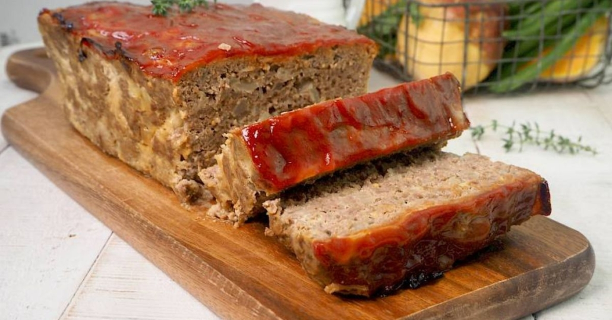

Meatloaf

How to make meatloaf
This traditional meatloaf recipe made with sauted vegetables, spices, and bread crumbs is moist and flavorful and topped with an old-fashioned glaze. Cook time will depend on the size and shape of your loaf, as well as the type of baking pan you use. Serve this hearty meal on cool fall or winter evenings with mashed potatoes and a simple mushroom gravy.
Ingredients:
- Ground Chuck: This recipe calls for ground chuck, but some reviewers like to use other kinds of ground meat (like beef or venison).
- Vegetables: The nearly-pureed carrot, celery, onion, bell pepper, mushrooms, and garlic will keep the meatloaf moist and flavorful.
- Worcestershire Sauce: A tablespoon of Worcestershire sauce gives the meatloaf its umami-rich flavor.
- Egg: The egg helps bind the meatloaf together.
- Spices: Chef John uses dried Italian herbs, salt, pepper, and cayenne pepper to season his meatloaf.
- Bread Crumbs: Bread crumbs will bind the meatloaf together.
- Glaze: This meatloaf has a glaze made with brown sugar, ketchup, Dijon mustard, and sriracha.
How to make meatloaf step by step:
- Mix all ingredients
- Shape the loaf
- Bake loaf until internal temperature reaches 405°C